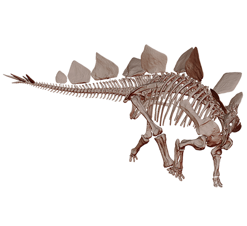
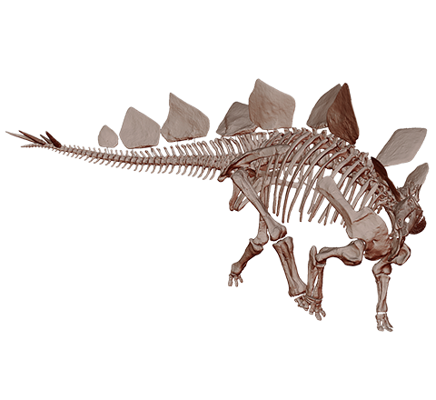

Stegosaurus («lagarto con tejado» o «lagarto cubierto» en referencia a sus placas óseas1 ) es un género de
dinosaurios tireóforos estegosáuridos. Vivieron a finales del período Jurásico, hace aproximadamente 156 y 144
millones de años, en el Kimmeridgiense y el Titoniense, en lo que hoy son América del Norte. En 2006, se
descubrió un espécimen de Stegosaurus en Portugal, lo que indica que este animal también estaba presente en
Europa. Debido a sus distintivas espinas de la cola y placas, Stegosaurus es uno de los más reconocidos
dinosaurios. Al menos tres especies han sido identificadas en la porción superior de la Formación Morrison, del
oeste de Estados Unidos, y son conocidas por lo menos por 80 individuos.
Siendo un gran herbívoro cuadrúpedo, pesadamente constituido, Stegosaurus tenía una distintiva e inusual
postura, con un lomo fuertemente arqueado, los miembros anteriores cortos, la cabeza cerca del suelo y la cola
rígida sostenida en el aire. Su arsenal de placas y de púas ha sido el tema de muchas conjeturas. Las espinas
fueron utilizadas muy probablemente para la defensa, mientras que las placas también se han propuesto como
mecanismo defensivo, y como parte de la exhibición y de las funciones de termorregulación. Stegosaurus fue uno
de los más grandes estegosaurianos (más grande que Kentrosaurus y que Huayangosaurus) y, aunque aproximadamente
del tamaño de autobús, compartía muchas características anatómicas (incluyendo a las espinas y las placas
traseras) con los otros géneros estegosaurianos.
El cuadrúpedo Stegosaurus es uno de los dinosaurios más fácilmente identificables, debido a la doble fila
distintiva de las placas romboidales que se elevan verticalmente a lo largo de su arqueado lomo y a los dos
pares de púas largas que se extienden horizontalmente cerca del extremo de la cola. El tamaño promedio de
Stegosaurus es de alrededor de 9 metros de largo y de 4 metros de alto. Aunque fue un animal grande, quedaba
empequeñecido por sus contemporáneos saurópodos gigantes como Diplodocus, Camarasaurus y Apatosaurus. Una cierta
forma de armadura parece haber sido necesaria, ya que coexistió con dinosaurios terópodos cazadores grandes,
tales como los temibles Allosaurus y el Ceratosaurus.
 
